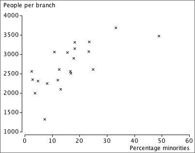

Bivariate data: population or sample?
In most bivariate data sets, we have no interest in the specific individuals from which the data are collected. The individuals are 'representative' of a larger population or process, and our main interest is in this underlying population.
Example
A newspaper compiled data from each of New Jersey's 21 counties about the number of people per bank branch in each county and its percentage of minority groups.

Local residents might be interested in the specific counties, but most outsiders would want to generalise from the data to describe the relationship in a way that might describe other similar areas in the Eastern USA. How strong is the evidence that banks tend to have fewer branches in areas with large minority groups?